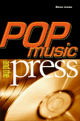

Seeing pop music journalism as a form of cultural criticism
Seeing pop music journalism as a form of cultural criticism


 Seeing pop music journalism as a form of cultural criticism
Seeing pop music journalism as a form of cultural criticism

|  |
Pop Music and the Pressedited by Steve Jonespaper EAN: 978-1-56639-966-1 (ISBN: 1-56639-966-1) |
"As one of the gatekeepers, I stopped reading reviews and music criticism in the press nearly ten years ago. Cold Turkey. Steve Jones's book offers the history and perspective to show why I was both right and wrong to do so."
—Paul Marszalek, Vice President/Music Programming, VH-1
Since the 1950s, writing about popular music has become a staple of popular culture. Rolling Stone, Vibe, and The Source as well as music columns in major newspapers target consumers who take their music seriously. Rapidly proliferating fanzines, websites, and internet discussion groups enable virtually anyone to engage in popular music criticism. Until now, however, no one has tackled popular music criticism as a genre of journalism with a particular history and evolution.
Pop Music and the Press looks at the major publications and journalists who have shaped this criticism, influencing the public's ideas about the music's significance and quality. The contributors to the volume include academics and journalists; several wear both hats, and some are musicians as well. Their essays illuminate the complex relationships of the music industry, print media, critical practice, and rock culture. (And they repeatedly dispel the notion that being a journalist is the next best thing to being a rock star.)
Excerpt available at www.temple.edu/tempress
"Pop Music and the Press will be a necessary addition to the collection of anyone interested in the study of popular music. These essays, written from a variety of academic disciplines and perspectives, explore and even sometimes capture the variability, the passion, and the frustration of writing and reading music journalism. This book really does add something to the mix that is popular music studies."
—Lawrence Grossberg, Morris Davis Distinguished Professor of Communication Studies and Cultural Studies, University of North Carolina
"Warning, my people (that is to say, rock and rap critics): read these pages and find yourselves subject to all-too-partial observation, someone else's critical agenda, and a bit of misplaced envy. Seem familiar? You've been doing it to musicians for years. And now the tables are turned..."
—Eric Weisbard, Experience Music Project
"A compilation of essays from scholars and professional music critics, this is a highly academic look at the practice of music criticism, the craft's brief history, and the trends that shape the opinions of American and British music writers. While the history lesson and excerpts by highly regarded protocritics like Lester Bangs and Robert Christgau are enjoyable, the book truly shines when it examines ongoing industry issues such as giving equal opportunity to women musicians and how to cover properly the death of a musical legend. Editor Jones (communications, Univ. of Illinois, Chicago) and his contributors aren't afraid to criticize the critics, but in doing so they sometimes sink to the methods they're denouncing. Missing are in-depth meditations on the importance of underground music fanzines and the sudden rise of Internet rock criticism. Overall, however, this book provides a thought-provoking and inspiring look at the practice of music criticism."
—Library Journal
"This fascinating new volume...fill[s] a significant gap in popular music scholarship...the book is an essential text for any scholar of popular music....a major contribution to the academic literature on popular music in part because it provides a foundation, heretofore absent, for future investigations of the world of music journalism and the cultural significance of the same."
—The Journal of Communication
Read "Talk About Pop Music," a review from Columbia's Free Times, 25 September 2002, written by Dan Cook (pdf).
Acknowledgments
The Intro: Popular Music, Media, and the Written Word – Steve Jones
Part I: Institutions and History
1. Re-Viewing Rock Writing: Narratives of Popular Music Criticism – Steve Jones and Kevin Featherly
2. Brit Crit: Turning Points in British Rock Criticism, 1960-1990 – Gestur Gudmundsson, Ulf Lindberg, Morten Michelsen, and Hans Weisethaunet
3. Word Power: A Brief, Highly Opinionated History of Hip-Hop Journalism – Jeff Chang
4. Critical Senility vs. Overcomprehension: Rock Criticism and the Lesson of the Avant-Garde – Robert B. Ray
Part II: Discourses
5. Consumers' Guides: The Political Economy of the Music Press and the Democracy of Critical Discourse – Mark Fenster
6. Between Rock and a Hard Place: Gender and Rock Criticism – Kembrew McLeod
7. Exclusive! The British Press and Popular Music: The Story So Far. . . – Martin Cloonan
8. Abandoning the Absolute: Transcendence and Gender in Popular Music Discourse – Holly Kruse
9. The Politics and History of Hip-Hop Journalism – Kembrew McLeod
Part III: Case Studies
10. Jewel Case: Pop Stars, Poets, and the Press – Thomas Swiss
11. Taking Country Music Seriously: Coverage of the 1990s Boom – Joli Jensen
12. Sweet Nothings: Presentation of Women Musicians in Pop Journalism – Brenda Johnson-Grau
13. "The Day the Music Died"—Again: Newspaper Coverage of the Deaths of Popular Musicians – Sharon R. Mazzarella and Timothy M. Matyjewicz
Coda
14. Fragments of a Sociology of Rock Criticism – Simon Frith
The Outro – Chris Nelson
About the Contributors
Index
Steve Jones is Professor of Communication at the University of Illinois, Chicago. Among his books are CyberSociety: Computer-Mediated Communication and Community (editor) and Rock Formation: Popular Music, Technology, and Mass Communication.
Contributors: Jeff Chang, Martin Cloonan, Kevin Featherly, Mark Fenster, Simon Frith, Gestur Gudmundsson, Joli Jensen, Brenda Johnson-Grau, Holly Kruse, Ulf Lindberg, Timothy M. Matyjewicz, Sharon R. Mazzarella, Kembrew McLeod, Morten Michelsen, Chris Nelson, Robert B. Ray, Thomas Swiss, Hans Weisethaunet, and the editor.
Mass Media and Communications
Music and Dance
American Studies
Sound Matters, edited by Michael Jarrett.
Using music as the entry point for cultural analysis, books in the series Sound Matters, edited by Michael Jarrett, seek to articulate the values, beliefs, and dreams of the societies that create it. This series invites project proposals whose interdisciplinary approaches to music and cultural analysis will result in innovative, provocative, and accessible results.
© 2015 Temple University. All Rights Reserved. This page: http://www.temple.edu/tempress/titles/1511_reg.html.